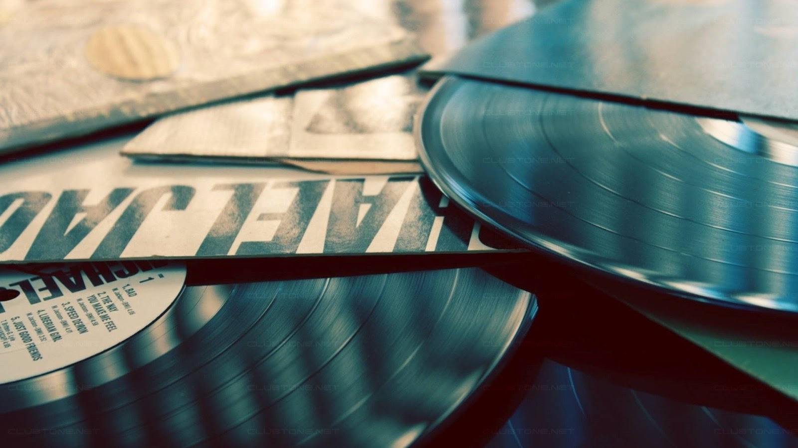

Contenu
Ajouter
Modifier
Supprimer
Produits
Passer une commande
Modifier l'article'
Nom de l'article
Auteur
Contenu
Il existe différents formats et plusieurs vitesses de lecture. Les disques tournant à 33 tours 1/3 par minute ont généralement un diamètre de 30 cm (12 pouces) ou, plus rarement, de 25 cm (10 pouces) à la fin des années 50 et au début des années 60 (Elvis Presley, Serge Gainsbourg…) et plus récemment pour certaines rééditions et éditions limitées. Mais on trouve aussi des 17 cm (7 pouces) tournant à cette vitesse. Le disque 33 tours standard est appelé LP pour « Long Play » et a généralement une durée de 20 à 30 minutes par face. Les disques tournant à 45 tours par minute ont habituellement un diamètre de 17 cm (7 pouces) et contiennent une chanson, voire deux, par face. Ce sont les ancêtres des CD deux titres, eux aussi appelés SINGLE. Il existe également des 45 tours (7 pouces) de 4 titres, appelés EP pour « Extended Play », plus longs qu'un single mais plus courts qu'un album. Ces 7 pouces tournent généralement à 45 tours par minute, plus rarement à 33 tours par minute. Beaucoup ont servi à la production de rock ’n’ roll et d’œuvres classiques. La fabrication des 45 tours a été dictée par une décision purement commerciale : créer un disque microsillon de 7 pouces de diamètre permettant d’enregistrer un seul morceau de musique par face et pouvant durer jusqu’à 5 minutes et 30 secondes. Avec ce cahier des charges, il ne restait qu’à adapter la vitesse de rotation afin d’exploiter toute la place disponible sur le disque. Malgré tout, certains prétendent que la vitesse de 45 tours/minute a été choisie pour une simple raison mathématique, puisque 45 = 78 – 33… Beaucoup de maxi 45 tours de 30 cm de diamètre ont été édités, principalement à la fin des années 1970. Le maxi single ou super 45 tours s’est généralisé essentiellement pour contenir des morceaux plus longs : plus de 20 minutes ! Ils furent plébiscités par les disc-jockeys et certaines radios libres qui trouvaient leur manipulation plus aisée et leur qualité de son supérieure aux 45 tours et 33 tours. Très souvent, ces disques incluent des versions inédites, des remix ne figurant pas sur les albums officiels. On les nomme « bonus tracks » ou « B-sides » sur les rééditions en CD. Les disques tournant à 16 tours par minute n’ont pas connu un grand succès commercial. Ils étaient surtout destinés à servir de support à des textes parlés. Ils tournent exactement à 16 tours 2/3 par minute, soit la moitié de 33 tours 1/3. Les premiers sont apparus en 1957 dans différents diamètres : 17 cm pour l’apprentissage des langues (utilisation pédagogique), 25 cm pour quelques éditions commerciales (en France, les marques Vogue et Ducretet-Thomson en ont édités), 30 cm pour de longues œuvres littéraires ou des pièces de théâtre à destination des aveugles et des malvoyants. Dans ce domaine, en France, l’Union des Aveugles de Guerre a édité de nombreux coffrets (de 6, 8 et 10 disques) comprenant jusqu’à 1 heure d’enregistrement par face. Ces disques en coffret ont pour particularité de présenter une étiquette centrale imprimée sur une face et, sur l’autre face, une étiquette noire avec le titre de l’œuvre écrite en braille. Aux États-Unis toujours, de 1956 à 1958, les firmes RCA et Columbia ont pressé des disques 16 tours. Cette dernière particulièrement pour son tourne-disque automobile « Highway Hi-Fi phonograph ». Chrysler en équipait certaines de ses voitures. Ces disques avaient une durée de 40 à 45 minutes par face et étaient exclusivement prévus pour être lus sur le tourne-disque de voiture, car le sillon, qui était deux fois plus étroit que sur un LP, nécessitait une tête de lecture équipée d’un saphir spécifique. La plupart des constructeurs d’électrophones et de platines tourne-disque avaient prévu une vitesse 16 tours sur leurs appareils, mais devant la production commerciale intimiste de ces disques, cette option a rapidement disparu. En matière de reproduction sonore analogique, plus le support tourne (ou défile) vite, meilleure est la qualité, notamment dans les fréquences élevées (aigus). C’est pour cette raison que les 16 tours ont eu beaucoup de mal à convaincre les audiophiles avertis. Certains vinyles ont même une face en 45 tours et l’autre en 33 tours, certaines raretés tournent du centre vers la périphérie du disque, certains disques sont colorés, d’autres translucides. Ceux que l’on nomme les « Picture discs » sont affublés d’un dessin ou d’une photo sur leurs faces, d’autres sont découpés en forme de fleur ou d’étoile, d’autres encore ont une face gravée et l’autre vierge ou pyrogravée… En réalité toutes les fantaisies sont possibles, et toutes ont été réalisées !
Image

Modifier